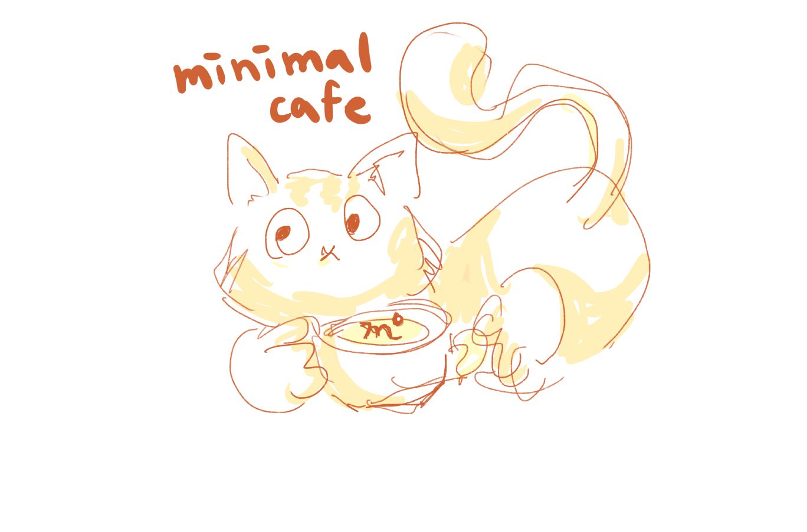

預約希望咖啡 留住極簡貓家
極簡咖啡募資計劃
在極簡，與貓相遇
極簡咖啡，是一間擁有多隻貓孩的貓咪咖啡廳，來到這裡，可以看見貓孩們自由穿梭，時而經過你身旁撒嬌地蹭個幾下，時而霸氣地跳上桌霸佔你的大腿、衣物、電腦。 療癒的貓孩撫慰都市人的心靈，忘卻生活的繁瑣，極簡咖啡創立之初，就是希望創造一個舒適的空間、提供一個能夠放鬆品嚐咖啡的場域，少些商業的氣息。
中途了近200隻貓咪
高達80隻浪貓成功走入家庭
近70隻貓孩成為極簡的貓老大
餵養超過百隻奶貓
極簡提供1761杯喘息咖啡
提供7位照顧者中途職場機會
3位特教孩子成為極簡的小孩
2018年進駐復華長照咖啡，負責吧台營運
帶著因腳傷，不願出門的媽媽來到極簡 認識極簡有10餘年，我與我媽愛貓而未養貓，能來吃吃喝喝看看貓，甚至抱到貓都是超級開心。 既使後來有了自己的貓孩（當時還好有欣儒仔細傳受照顧幼貓的經驗方法，讓我的貓孩順利成長頭好壯壯），有經過極簡有時間就會進來，吃吃東西喝喝咖啡看看貓，這承載著我的深厚情誼之處。 看著舊照幾度落淚，為著逝去的貓們，歲月悠悠，曾經的美好進入永恆的定格。 愛你在豐滿或瘦弱，愛你在身邊或不在 世界一直變，唯有不變 是愛
帶著拒學女兒來到極簡工作的媽媽 女兒高一時拒學，身為母親的我看著她陷入深淵，即使就醫吃藥卻看不到恢復的跡象，心中既焦慮又無措的當下，剛好社群傳來一封如救贖的訊息：你要不要試試帶女兒去貓咪咖啡廳打工? 約定好去咖啡廳觀察的時間點剛好是微寒的冬天，喝著暖暖的拿鐵並感受極簡老闆娘的關懷，看著女兒和貓咪開心互動的當下，我立刻決定辭掉當時的工作帶著她來到極簡咖啡開始為期一年半的打工。 極簡的氛圍就像家一樣的溫暖，除了熱心的工讀哥哥姐姐們淳淳善誘；最重要的是四處走動的貓咪療癒著受傷的心靈，無論是靜靜趴在腿上或是撒嬌要人模樣，女兒的情緒在貓咪無聲的陪伴、默默的理解下漸漸穩定。 只經歷了一年時間就給了她極大的勇氣及信心，決定再度挑戰重新進入高中就學，這些無法用言語形容的情感連結與心靈依靠都是極簡的貓咪彷彿奇蹟般所贈予的禮物啊！
2020疫情爆發，非需求性的餐飲產業大受影響，來店客人逐漸減少，以內用為特色的極簡頓失經濟來源，然而，需負擔的成本依然存在，貓孩早已是家人，極簡早已是家。因此，極簡想邀請你一同守護極簡這座充滿故事的咖啡館，讓這個充滿人間溫暖的空過永續存在，讓貓老大持續生活在極簡家，讓極簡能夠繼續提供照顧者喘息空間與工作的機會。
極簡邀請你一同
預約希望咖啡，留住極簡貓家
相關問題
加入極簡Line@（ID : @237kxhma ，包含＠哦！）官方帳號，點擊「儲值優惠」或點擊「支持理念」，極簡將提供您匯款帳號。匯款完成後請提供帳號末五碼。若選擇「儲值咖啡金」，極簡確認收款後，將會提供您「電子兌換券」，持電子兌換券於店內領取實體儲值卡，並於日後消費出示儲值卡，登記消費經額與剩餘金額。
來極簡時，出示「電子兌換券」領取儲值卡，於儲值卡登記儲值金額、消費金額與剩餘金額，只要出示儲值卡，即享有儲值優惠，並於儲值卡扣款，任卡不認人。卡片弄丟即無法兌換商品哦！極簡屬於小型店家，面對挑疫情戰無力負擔昂貴的儲金系統，店內人力緊縮也無法處理複雜的作業流程，恕不提供儲金卡的補發，請支持極簡的朋友們見諒。往後恢復正常營運，我們也會推出更多優惠來回饋支持極簡的朋友！
拿到電子兌換券後，來店領取儲值卡，即可當場使用！只要出示「仍有餘額」儲值卡，即可享有儲值優惠！
可繼續儲值，領取新的儲值卡。也可以將消費經額扣除儲值餘額後，剩下金額支付現金，此筆消費仍享有儲值優惠。儲值金額用完之儲值卡就沒有儲值優惠摟！
店內商品皆可兌換，極簡不只提供咖啡，還有很多不含咖啡因的飲品，如花草茶、氣泡飲、果汁⋯⋯還有好吃的點心可以享用，歡迎到極簡咖啡館臉書粉絲專頁看看菜單！
目前使用線上支持只提供匯款服務。現場購買儲值卡，則可以用Line pay付款哦！若方便到極簡現場支持，還能用電子支付享有1%回饋呢！
臉書搜尋「極簡咖啡館」粉專，Instagram搜尋「minimal_cat_cafe」看看極簡的老大們的近況，我們會持續更新。也可以點這裡，看看極簡過去中途的貓咪故事哦！這裡記錄了ㄧ部分中途貓咪的故事，是老闆娘用心的紀錄！（其實在臉書粉絲專頁也能找到很多很多極簡故事，等著你去挖掘）